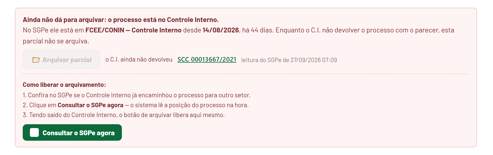
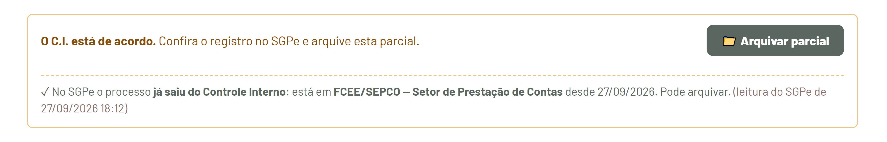
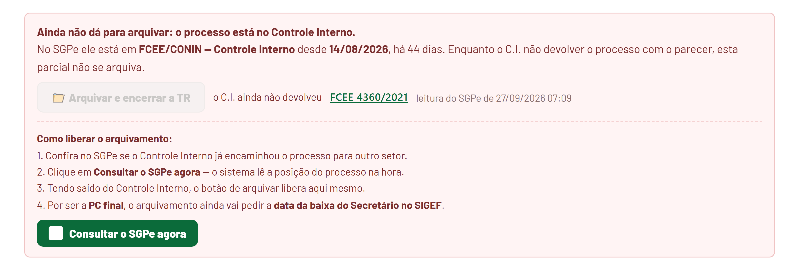

O que mudou na tela, e o que fazer quando o botão de arquivar não libera.
Enquanto o processo estiver, no SGPe, dentro do Controle Interno, a parcial não arquiva. E quando ele já tiver saído, a própria tela avisa que pode arquivar e diz em que setor ele está.
Quando o processo ainda estiver no C.I., a faixa fica vermelha e diz em que setor ele está, desde quando e há quantos dias. O botão Arquivar parcial aparece cinza, e o motivo fica escrito ao lado — não é preciso passar o mouse para descobrir.

Clique no número do processo, na própria faixa, para abrir o SGPe e ver se o Controle Interno já encaminhou para outro setor.
O botão verde, com a logo do SGPe, lê a posição do processo na hora e responde ali mesmo: “Agora no SGPe: FCEE/SEPCO — Setor de Prestação de Contas”.
Com o processo fora do Controle Interno, a faixa muda de tom e confirma, dizendo para onde ele foi e desde quando. O botão Arquivar parcial libera ali mesmo.

Na PC final, além de o processo ter saído do C.I. e de todas as parciais estarem arquivadas, o sistema pede a data da baixa do Secretário no SIGEF. O aviso aparece antes do clique, e não depois.

Lembrando: o registro do parecer no SIGEF continua sendo feito por você, como sempre. Para chegar ao arquivamento, ele já foi feito — o que se fecha aqui é a parcial no sistema.
Não trava mais. Quando o Controle Interno registra a devolutiva no sistema depois da última leitura do SGPe, a parcial libera — o fato novo vale mais que a leitura antiga. Nesse caso a faixa ainda avisa que a leitura está atrasada, para você conferir no SGPe antes de arquivar.
Nada acontece. A parcela arquivada continua arquivada: a leitura automática do SGPe nunca reabre o que já foi fechado, e nenhum aviso volta a aparecer.
Quando não há leitura do SGPe para aquele processo. O sistema não afirma o que não leu — e, sem leitura, o arquivamento segue as regras de sempre.